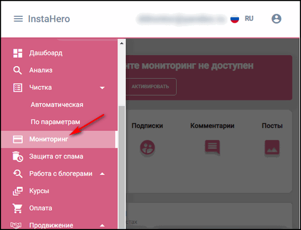
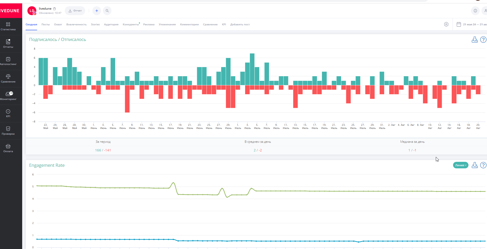
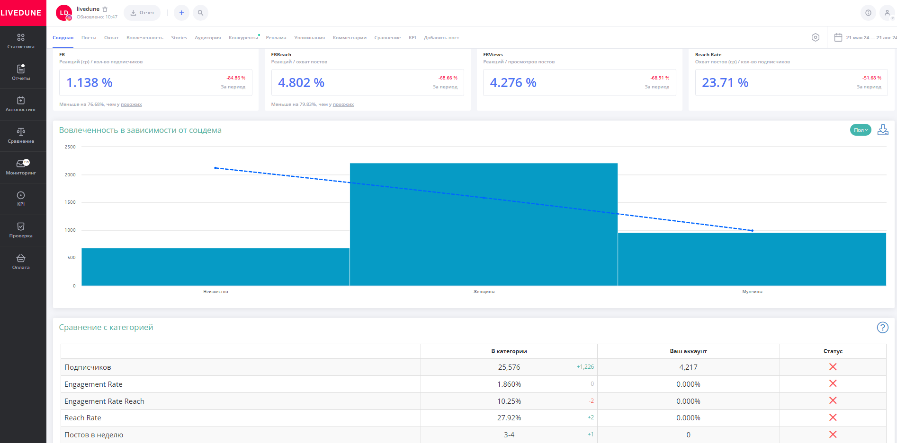
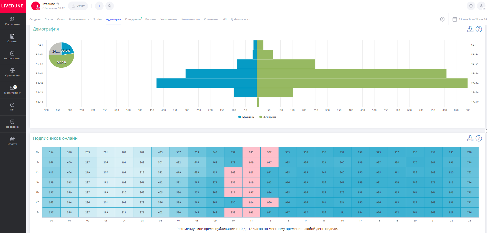
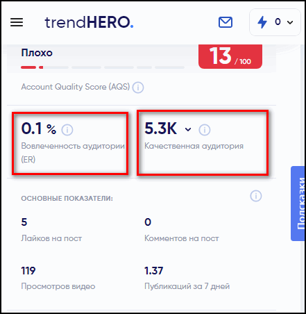
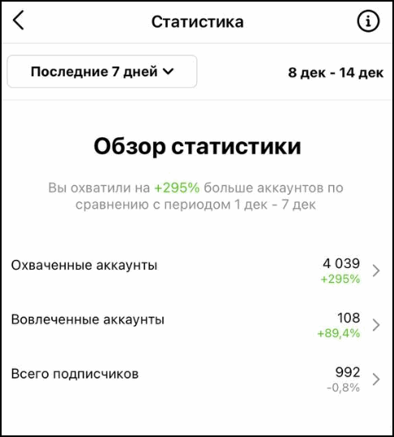
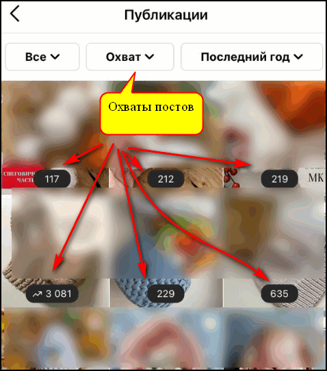
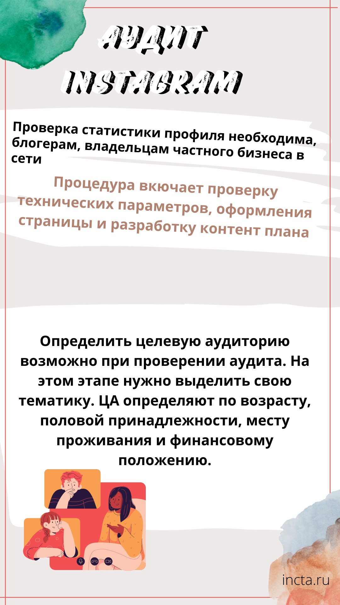

Как провести аудит своего аккаунта в Инстаграме

Аудит Инстаграм* аккаунта проводят начиная развивать блог и после того, как уже была набрана аудитория. Процедура включает проверку KPI (ключевые показатели эффективности), уровень взаимодействий ER (коэффициент взаимодействий). На основе технических данных можно посмотреть, где была допущена проблема в продвижении.
Что такое аудит и как его провести в Инстаграме*
Аудит – это проверка технических параметров страницы. Это подробный анализ, который проводят в коммерческих аккаунтах, блогах.
- правильно ли подобрана целевая аудитория;
- эффективность запущенных промоакций;
- какие публикации понравились подписчикам больше остальных;
- какой тип Историй стоит размещать.
- самостоятельно. Проверить по статистике, посмотреть активность на публикациях;
- воспользоваться онлайн-сервисами;
- обратиться к SMM-специалисту.
InstaHero: метрики проверки
С помощью сервиса InstaHero пользователь может подключить свою учетную запись и проверить, какая активность была на странице. Помимо показателей по популярным постам, InstaHero отображает:
- откуда аудитория;
- возраст и половую принадлежность;
- какое количество на странице ботов и фейков;
- рост подписчиков и отписчиков.
С помощью сервиса можно следить за своим профилем, выбирая наиболее популярные публикации с помощью вкладки: «Мониторинг».
Как воспользоваться сервисом для проверки аккаунта:
- Нажать: «Первый анализ» - посмотреть данные о своем профиле.

- Перейти в разделу: «Мониторинг».
В эти вкладки показывают, какая активность есть в учетной записи. Например, три последних наиболее популярных записи и количество действий на них. Отдельно есть графики, где указан прирост подписчиков или напротив – сколько отписалось за коротких период. С помощью раздела: «Вовлеченность» можно посмотреть сводную таблицу за неделю, месяц или пол года (в зависимости от уровня активности владельца аккаунта).
LiveDune: полный анализ профиля
LiveDune предоставляет полную информацию по профилям в социальных сетях, позволяет постить во все социальные соцсети в пару кликов, работать с комментариями и скачивать автоматические отчеты в удобном формате. Как работать с сервисом:
- Зарегистрируйтесь и добавьте аккаунт на Дашборд. Предоставлять пароль от аккаунта самому сервису не нужно, все работает через официальное API.
- Начинайте анализ аккаунта. На вкладке Сводная будет представлена общая информация в динамике, сравнение аккаунта со средними показателями по вашей категории, а также советы по улучшению активности и топ постов.

- Просмотр вовлеченности и зависимости от соцдема.

- На вкладке Аудитория можно посмотреть разбивку подписчиков по полу, возрасту, странам и городам, историю изменения аудитории по городам, возрасту и полу, а также лучшее время для публикации.

- На вкладке Конкуренты, сервис подберет и предложит добавить на отслеживание аккаунты конкурентов из вашей категории, а также сравнить их с вашим профилем по основным метрикам.
Используя возможности LiveDune, вы сможете построить рабочую стратегию, подсмотреть и адаптировать рабочие идеи у конкурентов, а также отслеживать эффективность контента и работы с аудиторией в социальных сетях.
TrendHero: уровень вовлеченности профиля
В сервисе TrendHero можно проверить страницу, посмотреть ER. Как воспользоваться сервисом:
- Зайти в сервис – создать аккаунт.
- Подключить профиль от Инстаграма* – подождать, пока завершится первая проверка.

- Перейти к анализу – ER и Качество аудитории.
Далее, владелец страницы увидит такие показатели, как:
- доступность аудитории. Какое количество подписчиков обладают числом подписок менее чем в 1500;
- аудитория по странам. Активные и просто подписчики;
- пол и тип аудитории.
Используя все параметры, владелец профиля сможет отследить, какое число из его фанатов реальные, на какие страны и языки нужно рассчитывать. При составлении контент плана, это необходимо для определения региональных традиций, праздников и того, что может заинтересовать аудиторию.
Провести аудит с помощью статистики в Инстаграме*
Сделать аудит аккаунта в Инстаграме* может любой владелец коммерческого профиля. Раздел «Статистика» доступен в полном объеме, как только число подписчиков превышает 100. Далее, можно отслеживать текущее количество лайков, взаимодействий с контентом.
- Зайти в Инстаграм* – Мой профиль.
- Три полоски сверху – Статистика.

- Посмотреть данные по аудитории, популярным записям.
В новой версии социальной сети пункт «Статистика» был вынесен в описание. Поэтому его можно найти и в этой вкладке, если нужно посмотреть текущее состояние ER во всем профиле.
- статистика отдельных публикаций. Посмотреть, какое количество действий было выполнено с постом;
- обратная связь. Писали ли подписчики комментарии под определенной публикацией;
- лайки, сохранения в постах;
- охваты.

Повышение активности в профиле
Есть несколько способов, как повысить активность и собрать за короткий срок более 1000 подписчиков. Но автору придется работать над контентом, постоянно наблюдать за статистикой и использовать методы продвижения. Как повысить:
- комментарии в тематических блогах. Нужно найти других блоггеров, которые пишут по схожей теме и регулярно оставлять под их постами осмысленные комментарии;
- хештеги и позиционирование. Чтобы появились новые подписчики – нужно правильно выбрать тематику. Например, бюджетные уходовые средства из массмаркета для женщин или разбор покупок с Aliexpress;
- вопросы аудитории и регулярные Истории. Короткие видео повышают активность по той причине, что их проще и быстрее смотреть, чем читать целый пост;
- участие в Reels и работа с другими площадками. Если создавать контент в Tik Tok и переносить его в Инстаграм*, сделав перелинковку – аудитория будет приходить из другой социальной сети.
Популярность обретают эксперты, который выпускают полезные материалы. Но в публикациях нужно оставлять лишь часть информации. Основную часть – переносить в чек-листы, курсы или онлайн-конференции. Сообщив подписчикам заранее, что будет проведена трансляция, они останутся чтобы её посмотреть.
Чек лист для проведения аудита страницы в Instagram
Провести полностью аудит аккаунта в Инстаграме* поможет короткий чек-лист. Автору страницы нужно действовать на пунктам, чтобы получить эффективное продвижение:
- Собрать последние 5 популярных постов.
- Посмотреть список подписчиков и количество фейков.
- Удалить из подписок ненужные страницы.
- Создать Актуальное и систематизировать.
- Посмотреть качество контента: фото и видео.
- Поработать над описанием страницы и выделением определенной тематики.

Например, использовать общие темы не стоит. В таком случае, подписчики не знают, что именно их ждет на странице.Проводить мониторинг по лайкам, комментариям и подпискам нужно раз в неделю (при активном продвижении и объеме аудитории в >50 000) и ежемесячно, если фанатов от 100 000.
Далее, нужно посмотреть структуру текста под публикациями и личный Tone Voice (стиль общения). Если у блогера оригинальный способ ведения аккаунта – это «плюс» к быстрому развитию страницы. При этом, в тексте должны присутствовать знаки препинания, форматирование (разделение на абзацы, списки и пункты).